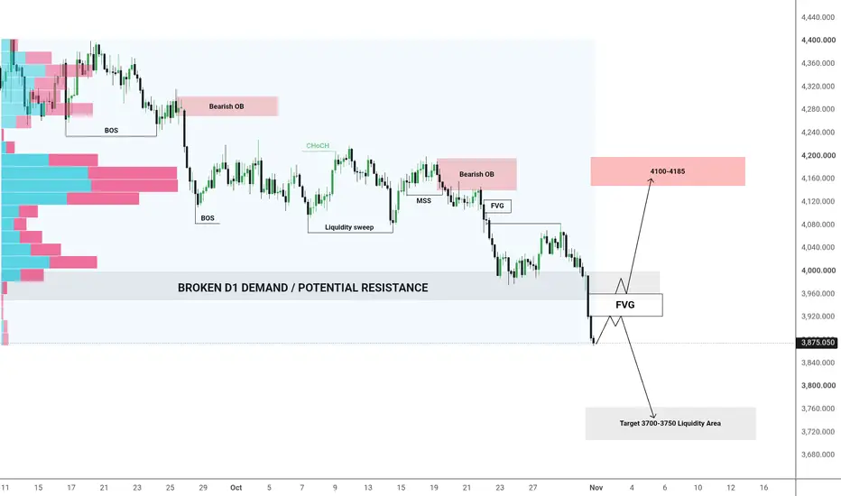

navigate through our diverse resources to enhance your trading journey.
here,you will not only learn deeper things but also at your own pace.
Welcome to our trading resources.
explore the forex trading materials that will help you understand the foreign exchange market and
navigate the industry of currencies, commodities
crypto and other CFDs elements.
Trading education
understanding forex
there is a reason why some traders make a consistent profits while others are still struggling to market
their ways into consistant profits. education is that gap that any trader need as first step cause learning
is the way to go before earning any coin in the forex markets.
technical Analysis
Discover charts,trends and technical indicators
example of the bullish uptrend on Gold.
source:tradingview

example of the bearish downtrend on Gold.
source:tradingview.